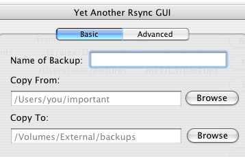
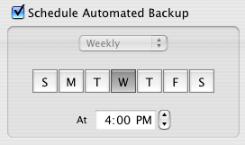
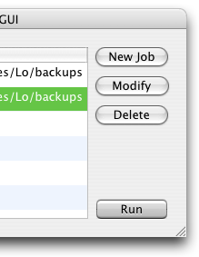

Avast! If ya be like most landlubbers I'd be willin' ta wager that yer precious treasures be lyin' unprotected in the depths o' yer hold. Those of us who've got some experience know that the safest place to store yer precious files be buried deep in some safe place.
Ships and laptops be fragile things that can be sunk, and if yer ship sinks yer gon'ta lose everything on it. Some of y'all 'ave prolly got some external hard drives or summat, but I'll bet you never remember to back up!
 Yarg be the easiest, quickest, and free-est backup program I been across in me travels across this great big internet. It's so simple I made it all by myself for a class at th' Berkeley Institute O' Piratry.
All it be doing is copyin' files from one place t' another. But arrrr, there's a twist! Fer one, Yarg always be rememberin' when ta run yer backups. Ya never haffa remember to press any more buttons or drag any files aroun'.

Fer another, Yarg don't be likin' ta drag aroun' the same old files over and over again. Instead,
yarg drives tha unix rudder o' OS X. Using tha tried 'n true
rsync program that comes with OS X, yarg makes
sure t' only move aroun' them files that are new or changed.
Lastly, yarg uses launchd ta make sure backups run whenever you tell 'em to, and t' make sure they play nice with tha rest o' yer system.
Fer advanced users who've got their sea legs, Yarg lets ya take advantage of the fancy features of rsync, such as backing up to an external site via ssh and custom exclude lists. Pretty fancy, eh?
By now I'll bet ye just be wantin tha software. And it be available right here, right now, fer no dubloons whatsoever!
Download Yarg v0.2 alpha released 4-09-08 (124kb dmg, universal, english only, os x 10.4+)
If ye be havin' any questions, comments, bug reports er whatnot, please be sendin' a message my way to yarg [at] turnlav dot net
NOTE: I be releasin' Yarg under the GNU GPL license mostly because I be a student and did it mostly fer tha learnin' and not fer dubloons. Yarg don't yet be havin' much in the way o' documentation or nuthin yet, but I think it be pretty self-explanatory. Yarg was inspired by the utter uselessness of rsyncx and the user interface, but not the functionality, of psyncx (both of which seem to be abandoned).
If ye be an advanced user er sumthin, ye can be downloadin the source code fer the latest version right here: yarg v0.2 alpha source. Ye can also browse it at mah trac, just go for the source.